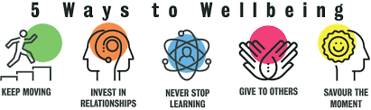

Il Wellbeing aziendale può essere realizzato attraverso una varietà di iniziative, ognuna progettata per soddisfare le esigenze specifiche dei dipendenti. Ecco alcuni esempi comuni:
Alcune aziende investono nella creazione di ambienti di lavoro che promuovono la salute fisica e mentale, come spazi verdi, uffici ergonomici e aree di relax. Questi ambienti stimolano la produttività e il benessere dei dipendenti, migliorando la loro soddisfazione e riducendo lo stress.
Molte organizzazioni stanno implementando programmi di salute mentale, come sessioni di counseling gratuito o workshop di mindfulness. Questo migliora il benessere psicologico e riduce lo stress dei lavoratori.
Offrire opzioni di lavoro flessibile, come il lavoro da remoto o orari personalizzati, può aiutare i dipendenti a bilanciare meglio la vita professionale e personale. Questa politica è particolarmente apprezzata da genitori o persone con esigenze familiari. Un'altra politica adoperata da parte dei datori di lavoro sono dei veri e propri "Feedback", un po' come quelli delle app, che servono per avere un commento da parte di ogni persona riguardante la situazione nel luogo di lavoro in modo che si possano migliorare eventuali cose.
Approfondisci l'importanza del lavoro flessibile in questo articolo.
